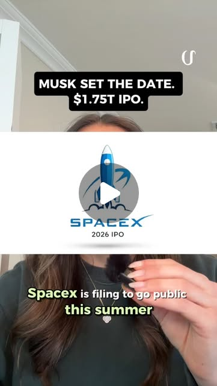
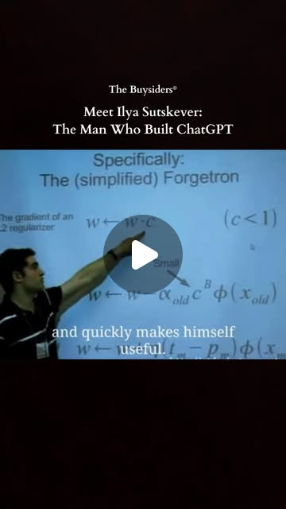
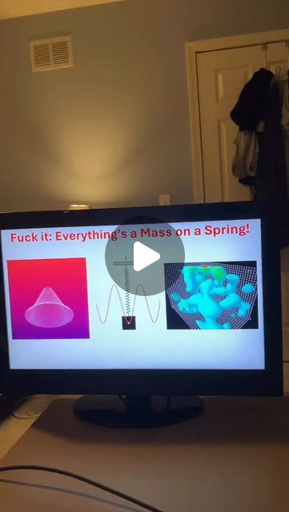
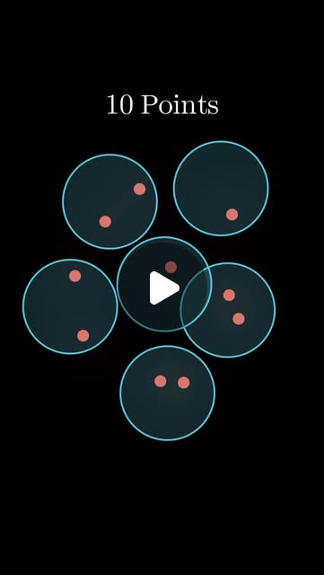
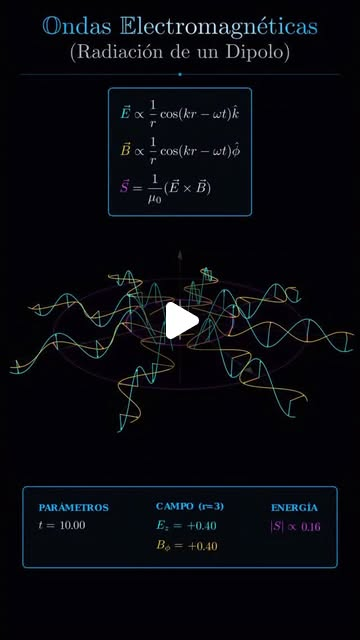

The Incentive Trap: Game Theory for the AI Age
Try It — Action Sketch
Map the incentive structure before making any decision → identify who benefits from each outcome → look for lock-in mechanisms (Elon's $1 pattern) → study failed strategies to understand what the 'game' actually is → apply physics intuition (equilibria, forces) to strategic situations.
Connected Posts (6)





Prompt system — run this yourself
Pasteable into Claude Code, Claude, or any agent. One-shot for the whole result, step prompts when you want to steer. Every step carries its own audit; the gap audit makes the agent find and fill what it missed.
Mission. Turn the six saved posts into a working incentive-mapping kit. That means three formal games written down and solved: the SpaceX day-one IPO trade versus the 'holdco re-rating' trade, the expired-API-domain squat that 'really thought this would work', and the Hinton-Sutskever-OpenAI talent and safety race. The money claim from @upsideinvest.io gets a paper event-study arm with a control, never a live trade. Done means every game has a computed and stability-checked equilibrium, and every factual claim has a primary source or the label UNVERIFIED.
1 · Deeper, not bigger
- What a top professional would do (that you didn't ask for): A strategist would refuse to reason from the headline number and would write the game down: players, what each observes, who moves first, and what each can credibly commit to. They would treat 'day one is the trap' as an empirical claim and check it against IPO return data. They would test 'buy the listed companies holding SpaceX stakes' as an event study on past parent-subsidiary IPOs, and they would expect the holding-company discount to eat the re-rating. They would check each equilibrium's stability, the way a physicist linearizes around a rest point to see whether it is a 'mass on a spring' or a ball on a hilltop.
- Rawest material to start from: SEC EDGAR: any SpaceX S-1, plus 10-K/10-Q filings found by full-text search for 'Space Exploration Technologies'. Jay Ritter's IPO return tables at the University of Florida. Price history from yfinance or Stooq for parent-subsidiary IPO analogs: Yahoo around Alibaba (2014-09-19), SoftBank around Arm (2023-09-14), and Amazon and Ford around Rivian (2021-11-10). The ICANN expired-registration policy and WIPO UDRP decisions for the domain game. Rumelhart, Hinton and Williams in Nature (1986), and Krizhevsky, Sutskever and Hinton (2012).
- Methods and tools: Extensive-form games in pygambit. Normal-form solving in nashpy, cross-checked against gambit-enummixed. Backward induction for subgame-perfect equilibria. Schelling-style commitment analysis covering lockups, the greenshoe and allocation. Replicator dynamics in numpy with Jacobian eigenvalues from scipy.linalg.eig. A market-model event study in statsmodels: estimation window -140 to -21, event window -5 to +20, CAR with a 5,000-resample bootstrap CI. A paper portfolio against a matched no-stake control basket. The probabilistic method for the 3Blue1Brown puzzle.
- What proves it right: EDGAR accession numbers proving each claimed SpaceX stake. Ritter's large-IPO return tables agreeing in sign with 'day one is a trap'. The event-study CI across at least five analogs, versus the control. Nashpy and Gambit returning identical equilibria. The arithmetic 10 x pi/(2 sqrt 3) = 9.069 > 9, plus a simulation with a 100% covering rate. At least three WIPO UDRP case numbers.
Rewritten prompt — ask for exactly that:
You are a game theorist and event-study analyst. Do not summarize the posts. Solve three games and test one market claim. 1. The day-one IPO trade versus holdco re-rating. @upsideinvest.io claims SpaceX lists at $1.75T, day-one buyers lose, and listed SpaceX or Starlink holders 're-rate overnight'. Pull the S-1 if one exists, and each claimed holder's 10-K from EDGAR. Model underwriters, insiders under lockup, institutions, retail and holdco holders in pygambit, and solve by backward induction. Run an event study on at least five parent-subsidiary IPOs (Yahoo/Alibaba, SoftBank/Arm, Amazon and Ford/Rivian, plus two you find) against a matched control. Paper only: 2% per name, 10% total, a -15% stop, and no real money until the CI excludes zero and the paper arm beats control. 2. The expired-API-domain squat. Use the ICANN expiry phases and UDRP outcomes to show the squatter's real payoff. 3. The Hinton-Sutskever-OpenAI race as a repeated commitment game. Check stability with replicator dynamics and eigenvalues. Also prove the 3Blue1Brown 10-disc puzzle by the probabilistic method. Return report.md, the code, and claims.csv marking each claim verified, unverified or false, with a source.
2 · One-shot prompt
ROLE You are a game theorist who also runs event studies. You trust filings and price data, not captions. You never recommend a live trade. CONTEXT (six saved posts) - @upsideinvest.io: 'SpaceX is filing to go public this summer at a $1.75 trillion valuation... The day one trade on a hyped IPO is almost always a trap... the real money is in the handful of public companies already holding SpaceX or Starlink stakes... the market has to re-rate them overnight.' The post names Facebook, Uber and Rivian as day-one losers. - @crimistickman: a fail clip about buying a dead API provider's domain to catch its clients' traffic. A commenter replies that clients switch within a day, lapsed domains take a long time to drop, and trademarks make it 'the fastest way to land in court'. - @buysiders: Sutskever meets Hinton at 17 and asks why the gradient is not handed to 'a sensible function optimizer'. Later, as OpenAI's chief scientist, he reviews bunker plans. - @thatblackchemist: 'everything's a mass on a spring'. @3blue1brown: can 10 points always be covered by disjoint unit discs? @merlinomath: radiation comes from the field's delayed response. Tools: Python 3.11, nashpy, pygambit, numpy, scipy, statsmodels, yfinance, EDGAR full-text search. HARD CONSTRAINTS - No real money. The market work runs as a paper arm on a notional $100,000 book: 2% max per name, 10% max total, -15% stop per name, plus a control basket of matched no-stake peers and the sector ETF. Log each paper fill with a timestamp and price source. - Promise no returns. Report confidence intervals only. - Every factual claim gets a primary source or the label UNVERIFIED. - Solve games in code. Label every assumed payoff and give it a range. DELIVERABLES 1. claims.csv covering each creator claim. Check the S-1 status on EDGAR. List real SpaceX holders and carrying values via full-text search. Pull Ritter's first-day and three-year IPO returns. Pull FB, UBER and RIVN prices. 2. Game A, the IPO, as an extensive-form game. Players: underwriters, insiders under lockup, institutions, retail, index providers and holdco holders. Solve for the subgame-perfect equilibrium and name the commitment devices. 3. An event study on at least five analogs (Yahoo/Alibaba, SoftBank/Arm, Amazon/Rivian, Ford/Rivian, and more), with CAR from -5 to +20, a bootstrap 95% CI, and the holdco discount before and after. 4. The paper arm. Pass rule: mean CAR > 0 with the CI excluding 0, and the paper arm beating the control. Otherwise the claim is UNPROVEN and no real money moves. 5. Game B, the domain squat. Use the ICANN phases (auto-renew grace, 30-day redemption, 5-day pending delete) and WIPO UDRP win rates. Find the squatter's best response. 6. Game C, the AI race. Solve the repeated Race-or-Restrain game, find the critical discount factor, run replicator dynamics, and check Jacobian eigenvalues. Negative real parts mean a spring that returns to rest. A positive one means a hilltop. 7. The math anchor. A random translate of the hexagonal unit-disc packing covers each point with probability 0.9069, so the expected count is 9.07 > 9 and some translate covers all 10. Explain why this averaging move is the logic of mixed strategies. BUILT-IN GAP ANALYSIS Write a Gaps section listing assumed numbers, unpriced analogs, holders without filings, and equilibria that hinge on guessed payoffs. Fill what you can now: fetch the filing, add the analog, run the sensitivity. Mark the rest UNFILLED, with the reason. SELF-QUESTIONS Has SpaceX actually filed? Does the holdco discount swamp the re-rating, as it did for Yahoo? Which payoff flips each equilibrium? Is any equilibrium a hilltop? STOP Stop when all three games are solved and at least five analogs are priced. Stop early if EDGAR shows no filing and no holders. In that case, report the claim as unsupported and do not build the paper arm on guesses. RETURN report.md (Ground Truth, Game A, Event Study, Paper Arm, Game B, Game C, Math Anchor, Gaps, Verdict), games.py, event_study.py, paper_arm.csv and claims.csv.
3 · Step-by-step prompts
Step 1 — Ground truth and rawest material
Goal: Separate what the six posts claim from what primary sources show.
Extract every factual claim from the six posts into claims.csv with the columns claim, creator, source_url, status and evidence. The status is verified, unverified or false. The claims include: - @upsideinvest.io's $1.75T valuation and summer filing, bigger than Berkshire, Tesla and the banks combined, Facebook, Uber and Rivian as day-one losers, and listed SpaceX holders at 'normal multiples'. - The @crimistickman commenter's 'two years of 404s' and trademark-risk claims. - @buysiders' Sutskever-at-17 story, the backprop paper, and the 2023 bunker anecdote. Check each claim. For the IPO, look for an S-1 or S-1/A from Space Exploration Technologies Corp on EDGAR. For holders, run EDGAR full-text search for 'Space Exploration Technologies' in 10-K and 10-Q filings from the last 24 months, and record the filer, stake and carrying value. For returns, use Ritter's IPO tables and FB, UBER and RIVN first-day and one-year price returns. For domains, use ICANN's expired registration recovery policy. Count the independent sources for the bunker anecdote.
Expect: claims.csv with 12-20 sourced rows and a one-paragraph summary of which load-bearing claims hold.
Audit before moving on: Reopen every 'verified' URL and confirm the figure appears there. Mark any holder without an accession number unverified. If there is no S-1, flag the IPO premise as conditional in every later step. Fail on any empty evidence cell.
Step 2 — Solve the IPO game
Goal: Write and solve the day-one IPO game in extensive form.
Using claims.csv, model the SpaceX listing in pygambit. The players are underwriters, who set price and allocation; insiders under a 180-day lockup; institutional allocants, who flip or hold; retail, who buys at the open or waits; and holdco holders. Information sets matter: retail cannot see allocation demand, and underwriters can. Take payoffs from data. Use Ritter's average first-day pop and three-year underperformance for large IPOs, and the observed FB, UBER and RIVN paths. Solve by backward induction. Cross-check the normal-form reduction with nashpy. Name the commitment devices that make up the actual 'trap': lockup expiry, the greenshoe, directed-share programs and index inclusion lags. Run a sensitivity table that perturbs each payoff by plus and minus 50%, and report which perturbation flips retail's best response.
Expect: games.py containing Game A, a sourced payoff table, the solver output, a text tree and the sensitivity table.
Audit before moving on: If the equilibrium flips inside the plus or minus 50% band, label it fragile. Every payoff must trace to claims.csv or carry an 'assumed' label. Nashpy and Gambit must agree. Treat any disagreement as a bug.
Step 3 — Event study plus capped paper arm
Goal: Test 'holders re-rate overnight' on analogs and set up a paper position with a control.
Test the claim that listed stakeholders re-rate when a private holding IPOs. Analogs: YHOO around Alibaba on 2014-09-19, 9984.T around Arm on 2023-09-14, AMZN and F around Rivian on 2021-11-10, and at least two more you find. Fit a market model in statsmodels on days -140 to -21. Compute CAR over -5 to +20 with a 5,000-resample bootstrap 95% CI. Run the same window on three matched no-stake peers per parent as the control. Compute the holdco discount (stake value divided by parent market cap) before and after each event. Then write paper_arm.csv for the verified SpaceX holders: a notional $100,000 book, 2% per name, 10% total, a -15% stop, and the control basket of the sector ETF plus peers. Pass rule: mean CAR > 0 with the CI excluding zero, and the paper arm beating control. No real money until both hold.
Expect: event_study.py, a per-analog CAR table with CIs, a holdco-discount table, and paper_arm.csv.
Audit before moving on: Confirm the estimation and event windows do not overlap. With fewer than five priced analogs, mark the test underpowered and give no verdict. Confirm the 2% and 10% caps hold. Fail if no control rows exist.
Step 4 — Solve the failed strategy
Goal: Show with a solved game why the expired-API-domain squat fails, or where it does not.
Model @crimistickman's squat. The players are the squatter; API clients still calling the dead endpoint, who switch within N days or keep calling; the trademark holder, who ignores, sends a cease-and-desist, or files a UDRP complaint; and the registrar. Use the current ICANN phases as the clock, and test the commenter's 'two years' claim against them. Search WIPO UDRP decisions on lapsed-then-reregistered trademark domains. Record at least three case numbers and the complainant win rate. Squatter payoff = residual call volume x P(clients still calling) - expected legal cost. Solve the game with nashpy. Map the parameter region where squatting pays, if any exists. State the general rule: a strategy that only pays if the other side never adapts is not an equilibrium strategy.
Expect: Game B in games.py, sourced inputs, the equilibrium output, a parameter-region plot, and a 150-word lesson.
Audit before moving on: Check the ICANN phases against the live policy page. Require three or more UDRP citations. If some sourced region makes squatting pay, report it. Do not force the 'fail' story.
Step 5 — AI race game and stability
Goal: Model the Hinton-to-OpenAI arc as a repeated commitment game and test whether its equilibrium is stable.
Model two or three labs choosing Race or Restrain each period, with talent moving toward the best mix of compute, pay and mission. This is the dynamic @buysiders describes from AlexNet onward. Treat the bunker as a costly safety signal. Solve the stage game. Find the critical discount factor delta above which grim-trigger or tit-for-tat sustains Restrain. Run replicator dynamics on the share of labs playing Race. Find the rest points and their Jacobian eigenvalues. Translate the result with @thatblackchemist's frame: negative real parts are a spring that returns to rest, and a positive one is a hilltop. Add an observation lag, following @merlinomath's delayed field, and test whether it creates oscillation. Label every payoff as assumed, with a range.
Expect: Game C code, the stage equilibrium, the critical delta, a rest-point and eigenvalue table, and phase_plot.png.
Audit before moving on: For the two-strategy case, the eigenvalues from scipy.linalg.eig and the analytic eigenvalues must match. If the conclusion changes across the payoff range, call it conditional. Fail if any historical statement lacks a step 1 citation.
Step 6 — Math anchor: the probabilistic method
Goal: Prove the 3Blue1Brown 10-point puzzle and tie it to mixed strategies.
Prove that any 10 points in the plane can be covered by disjoint unit discs. Use a hexagonal unit-disc packing with density pi/(2 sqrt 3), about 0.9069. Translate it by a vector drawn uniformly over a fundamental domain. Each point is covered with probability 0.9069, so by linearity of expectation about 9.069 of the 10 points are covered. Since 9.069 > 9, some translate covers all 10. Verify this numerically in sim.py. Draw 10,000 random and adversarially clustered 10-point sets and grid-search translates until all 10 points are covered. Compute the largest n for which n x 0.9069 > n - 1. Then write one paragraph on why this averaging argument is the logic behind mixed strategies: a random choice whose expectation guarantees that a good pure choice exists.
Expect: proof.md, sim.py with a 100% covering rate, the n bound (n up to 10), and the connecting paragraph.
Audit before moving on: Compute the density to 6 decimals. If any sampled set fails, refine the grid before calling it a counterexample. A failure means a bug, because the proof is sound.
Step 7 — Validate against oracles and write the gap report
Goal: Check every result against an external oracle and publish the verdict with gaps.
Run the oracle pass: (a) EDGAR accession numbers for each holder. (b) Ritter's tables agree in sign with 'day one is a trap'. (c) Event-study CI across at least five analogs, against the control. (d) Nashpy and Gambit agree. (e) 10 x 0.9069 > 9 and sim.py covers 100% of sets. (f) Three or more UDRP case numbers. Mark each oracle pass, fail or not-run, with an evidence path. Assemble report.md with the sections Ground Truth, Game A, Event Study, Paper Arm, Game B, Game C, Math Anchor, Gaps and Verdict. The Verdict states plainly whether the holdco claim passed. If it did not, it stays UNPROVEN and the paper arm continues with no real money. Rank the remaining gaps by impact, each with what would close it.
Expect: report.md, a six-row oracle table, and 5-10 ranked gaps.
Audit before moving on: Downgrade any 'pass' without a path or URL to not-run. Confirm the report states no expected return and quotes the no-real-money gate in the Verdict.
4 · Gap analysis and audit
You are an independent reviewer who did not build this. Open report.md, claims.csv, games.py, event_study.py, paper_arm.csv and proof.md. 1. Enumerate every factual, numeric and equilibrium claim. Mark each one verified (with a URL or a reproducing command), unverified, or false (with counter-evidence). 2. Rerun games.py and event_study.py in a clean environment and diff the results against the report. Any number that does not reproduce is false until fixed. 3. Check specifically: - Is there a real SpaceX S-1, or is $1.75T caption-only? - Does every 'holder' have an accession number? - Is Yahoo/Alibaba in the event study, with its holdco discount reported? - Are paper sizes within 2% per name and 10% total, and is there a control basket? - Is the no-real-money gate stated? 4. List the missing pieces: unpriced analogs, assumed payoffs, skipped sensitivity, untested lag. 5. Rank the issues by impact on the verdict. Fix the top three now and show the diffs. 6. Report what you could not fix and why. Return audit.md with the columns claim, status, evidence and fix_applied, a 'Remaining gaps' section, and an A-F confidence grade.
Questions the agent must ask itself before it says done:
- Has SpaceX actually filed an S-1, or is every number downstream of a caption?
- Which companies report a SpaceX stake in their own 10-K, and at what carrying value?
- Does the holdco discount swamp any re-rating, as it did for Yahoo and Alibaba?
- Is 'day one is a trap' true for the largest IPOs, or only for the median IPO?
- Did I model retail's disadvantage as an information set rather than as a payoff tweak?
- Which single payoff flips each equilibrium, and is that payoff sourced?
- Is any claimed equilibrium a hilltop under replicator dynamics?
- Does an observation lag create oscillation in the race game?
- Did I verify the ICANN timeline instead of trusting the commenter's 'two years'?
- Is the bunker anecdote single-sourced, and is it carrying weight in Game C?
- Did any sentence drift toward recommending a live position?
5 · What proves it right
- SEC EDGAR: the SpaceX S-1 and each holder's 10-K or 10-Q show the stake. Cite the accession numbers.
- Jay Ritter's IPO statistics: large-IPO first-day and three-year returns agree in sign with the 'trap' claim.
- Event study: mean CAR from -5 to +20 across at least five analogs with a bootstrap 95% CI, against a matched no-stake control basket.
- Two solvers: nashpy and pygambit return identical equilibria for every normal-form game.
- Arithmetic and simulation: 10 x pi/(2 sqrt 3) = 9.069 > 9, and sim.py covers 100% of 10,000 sets.
- WIPO UDRP database: at least three decisions on lapsed trademark domains, cited by case number.
6 · Failure modes
- Caption laundering. Tell: no accession number anywhere. Fix: gate step 2 on the S-1 status and label everything downstream conditional.
- Ignoring the holdco discount. Tell: parents lag their stake value in the event study. Fix: report the discount alongside CAR every time.
- Payoff theater. Tell: no sensitivity table. Fix: perturb by plus and minus 50% and report the flip points.
- Tiny-sample verdict. Tell: the CI is wider than the mean. Fix: require five or more analogs, or label the test underpowered.
- The paper arm turns real. Tell: a broker API key or the word 'buy' appears. Fix: no broker integration, and the gate stated in the Verdict.
- Physics as vibe. Tell: 'mass on a spring' appears with no eigenvalues. Fix: a Jacobian check for every equilibrium.
7 · Agent direction (unattended runs)
Start with EDGAR full-text search and Ritter's tables. The whole market half depends on whether the filing and stakes exist. Cache EDGAR JSON and price CSVs under data/raw/ with fetch dates so reruns are deterministic. Run nashpy and pygambit side by side, and treat any disagreement as a bug. Spawn one sub-agent for the event study, since it is data-heavy and independent, and pass it the exact analogs, windows, caps and control definition. Keep the games and the math anchor in the main thread. Ask the human only if EDGAR shows no SpaceX filing and no holders, because then they must decide whether to continue with the games alone. Never connect a brokerage. Return report.md, claims.csv, games.py, event_study.py, paper_arm.csv, proof.md, sim.py and audit.md. The final message lists each oracle as pass, fail or not-run and restates the no-real-money gate.
Prompt system updated 2026-10-22 · all prompt systems · JSON